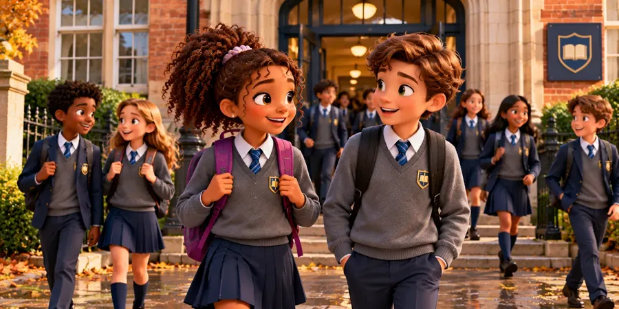

<!DOCTYPE html><html lang="fr"><head><meta charset="utf-8"><meta name="viewport" content="width=device-width,initial-scale=1,viewport-fit=cover"><link rel="preconnect" href="https://fonts.googleapis.com"><link href="https://fonts.googleapis.com/css2?family=Baloo+2:wght@600;700;800&family=Nunito:wght@500;700;800&display=swap" rel="stylesheet"><title>La clé du coucher de soleil</title>
<style>
*{box-sizing:border-box;-webkit-tap-highlight-color:transparent}
html,body{--display:'Baloo 2','Trebuchet MS',system-ui,sans-serif;--body:'Nunito',system-ui,-apple-system,'Segoe UI',sans-serif;margin:0;height:100%;overflow:hidden;background:#dfe5fb;font-family:var(--body);color:#1b2347}
button,input{font-family:var(--body)}
.go,.q,.opts button,.ord button,.x,.tag,.pill,.title,#chap{font-family:var(--display)!important}
button{font-family:inherit;cursor:pointer}
#app{width:min(100vw,460px);height:100dvh;margin:0 auto;background:#f2f5ff;display:flex;flex-direction:column;overflow:hidden;position:relative}
#top{display:flex;align-items:center;gap:8px;padding:8px 12px;min-height:46px}
#bar{flex:1;height:10px;border-radius:9px;background:#d9dff5;overflow:hidden}#bar i{display:block;height:100%;width:0;background:linear-gradient(90deg,#2459e6,#5b8cff);transition:width .4s;border-radius:9px}
#chap{font:800 1.05rem var(--body);color:#5a6490;white-space:nowrap}
.x{border:2px solid #d9dff5;background:#fff;border-radius:10px;font:900 1.05rem var(--body);padding:5px 11px;color:#1b2347}
#main{flex:1;min-height:0;display:flex;flex-direction:column;padding:0 12px 12px;gap:10px}
.img{width:100%;border-radius:18px;border:3px solid #fff;box-shadow:0 3px 0 #d9dff5,0 6px 14px #1b234722;display:block;background:#fff;flex:none}
.img.sm{max-height:24dvh;width:auto;max-width:100%;align-self:center}.img{cursor:zoom-in}.zoomb{position:absolute;right:20px;margin-top:-44px;background:#1b2347cc;color:#fff;border-radius:999px;padding:4px 12px;font:800 .95rem var(--display);pointer-events:none}.imw{position:relative;flex:none;display:flex;flex-direction:column;align-items:center}.imw .zoomb{right:10px;top:auto;bottom:10px;margin:0}
.card{overflow:hidden;background:#fff;border:3px solid #d9dff5;border-radius:20px;padding:16px;flex:1;min-height:0;display:flex;flex-direction:column;justify-content:space-between;gap:12px}
.story{font:700 calc(1.65rem*var(--k,1))/1.45 var(--body);overflow:auto;text-align:left;flex:1;display:flex;flex-wrap:wrap;align-content:center;gap:0 .3em}
.story .w{border-radius:6px;padding:0 2px;transition:background .15s}.story .w.on{background:#ffe27a}.story .w:active{background:#cfe0ff}
.row{display:flex;gap:8px;justify-content:center;flex-wrap:wrap}
.go{border:0;border-radius:18px;background:#2459e6;color:#fff;font:900 1.35rem var(--body);padding:16px 24px;box-shadow:0 4px 0 #1a3fa8}.go:active{transform:translateY(2px);box-shadow:0 2px 0 #1a3fa8}
.go.g{background:#fff;color:#1b2347;border:2px solid #d9dff5;box-shadow:0 4px 0 #0001}
.title{font:800 2.3rem/1.1 'Baloo 2','Trebuchet MS',sans-serif;text-align:center;color:#2459e6}
.sub{text-align:center;color:#5a6490;font:800 1.15rem var(--body)}
input{font:800 1.6rem var(--body);text-align:center;border:3px solid #2459e6;border-radius:14px;padding:10px;width:100%;color:#1b2347}
.tag{align-self:flex-start;border-radius:999px;color:#fff;font:800 1.1rem 'Baloo 2',sans-serif;padding:4px 14px;box-shadow:0 2px 0 #0003}
.q{font:800 calc(1.75rem*var(--k,1))/1.25 var(--body);text-align:center}
.opts{display:flex;flex-direction:column;gap:12px}
.opts button{border:3px solid #d9dff5;border-radius:18px;background:#fff;font:800 calc(1.5rem*var(--k,1)) var(--body);padding:calc(18px*var(--k,1)) 12px;color:#1b2347;text-align:center}
.opts button.good{background:#3dbb5a;border-color:#2c9a46;color:#fff}.opts button.bad{background:#e03a3a;border-color:#b82a2a;color:#fff;animation:sh .3s}
@keyframes sh{25%{transform:translateX(-6px)}75%{transform:translateX(6px)}}
.hint{text-align:center;font:800 1.15rem var(--body);color:#5a6490;min-height:22px}
.sheet{position:absolute;inset:0;background:#1b2347cc;display:flex;align-items:flex-end;z-index:10}.sheet>div{background:#fff;border-radius:22px 22px 0 0;padding:16px;max-height:80dvh;overflow:auto;width:100%}
.pill{display:inline-block;border-radius:999px;padding:6px 14px;color:#fff;font:800 1.3rem 'Baloo 2',sans-serif;margin:3px}
.stars{font-size:2.4rem;text-align:center}
.ord button{border:3px solid #d9dff5;border-radius:16px;background:#fff;font:800 1.3rem var(--body);padding:14px;color:#1b2347;text-align:left}.ord button.done{background:#3dbb5a;color:#fff;border-color:#2c9a46}
.lb{position:absolute;inset:0;background:#000e;z-index:20;overflow:auto;display:flex;align-items:center}.lb img{width:100%;height:auto;display:block;cursor:zoom-in}.lb.z img{width:260%;max-width:none;cursor:zoom-out}.lb.z{align-items:flex-start}.lbx{position:fixed;top:12px;right:12px;z-index:21;border:0;border-radius:50%;width:48px;height:48px;font:900 1.4rem var(--body);background:#fff}.lbh{position:fixed;bottom:16px;left:0;right:0;text-align:center;color:#fff;font:800 1rem var(--display);z-index:21;pointer-events:none}
</style></head><body><div id="app"><div id="top"></div><div id="main"></div></div>
<script>
const $=i=>document.getElementById(i);
const TAGS={i:['🔎 Regarde l\'image','#8a4fe0'],m:['📖 Je me souviens','#2459e6'],c:['🧠 Je réfléchis','#e08a1a']};
const Q_=new URLSearchParams(location.search),EMB=window.parent!==window;let N=(Q_.get('n')||'Lina'),ch=0,pg=0,qi=0,score={i:[0,0],m:[0,0],c:[0,0]},first,sheetOpen=false;
/* ===== Histoire : 8 chapitres, 1 image chacun ===== */
const S=[
{t:'À l\'aéroport',img:1,p:[
`{N} marche vite dans le grand aéroport. Elle tire sa valise noire et tient son billet dans la main. Ce matin, elle part pour l'Angleterre ! Elle va passer les vacances d'hiver chez son cousin Tom. Elle a un peu peur, mais elle a surtout très envie de voyager.`,
`Avant de partir, Mamie lui a donné une petite clé en or. « Garde-la bien, a-t-elle dit. Elle ouvre un secret de notre famille. » Puis elle a lu une phrase écrite sur un papier : « Cherche ce qui brille quand le soleil se couche. » {N} range la clé dans la poche de son pull. Derrière la vitre, un grand avion blanc l'attend.`],
q:[{k:'i',q:'Sur l\'image, qu\'est-ce que {N} tire derrière elle ?',o:['Une valise','Un chariot','Un chien'],a:0},
{k:'m',q:'Qui a donné la petite clé à {N} ?',o:['Tom','Mamie','La maîtresse'],a:1},
{k:'m',q:'Que dit la phrase écrite sur le papier ?',o:['Cherche ce qui brille quand il pleut.','Cherche ce qui brille quand le soleil se couche.','Cherche ce qui chante quand le soleil se lève.'],a:1}]},
{t:'Manchester',img:2,p:[
`L'avion a atterri. À la sortie, Tom attendait avec un grand sourire. « Bienvenue en Angleterre ! » a-t-il crié. Il a pris la valise de {N}, qui roulait avec peine sur les pavés mouillés. Dans la rue, un tram jaune arrivait en faisant « ding, ding ».`,
`Ils sont montés dans le tram. Par la fenêtre, {N} regardait la grande tour avec deux horloges et les vieilles maisons en briques rouges. « C'est la ville de Manchester ! » a dit Tom. Soudain, {N} a mis la main dans sa poche pour vérifier quelque chose. La clé était toujours là. Ouf !`],
q:[{k:'i',q:'De quelle couleur est le tram ?',o:['Rouge','Jaune','Bleu'],a:1},
{k:'i',q:'Quel mot est écrit devant le tram ?',o:['Londres','Liverpool','Manchester'],a:2},
{k:'c',q:'Pourquoi {N} met-elle la main dans sa poche ?',o:['Pour prendre un bonbon','Pour vérifier que la clé est là','Pour chercher son billet'],a:1}]},
{t:'Le premier jour d\'école',img:3,p:[
`Lundi, c'était le premier jour d'école de {N} en Angleterre. Elle portait un uniforme : un pull bleu foncé, une cravate à rayures et une jupe grise. Le grand bus jaune s'est arrêté devant l'école. Les enfants descendaient en riant. {N} avait le cœur qui battait très fort.`,
`Devant la porte, la maîtresse lui faisait de grands signes de la main. Mais plouf ! Sa clé est tombée dans une flaque, et {N} ne s'en est pas rendu compte. Un garçon aux cheveux frisés l'a ramassée. « Tu as perdu quelque chose ! » a-t-il dit en souriant. Il s'appelait Sam. « Merci ! » a répondu {N}. Elle venait de se faire un nouvel ami.`],
q:[{k:'c',q:'Comment se sent {N} devant l\'école ?',o:['Un peu inquiète','Très en colère','Endormie'],a:0},
{k:'m',q:'Qu\'est-ce qui est tombé dans la flaque ?',o:['Son livre','Son sac','La clé'],a:2},
{k:'m',q:'Qui a ramassé la clé ?',o:['Sam','Tom','La maîtresse'],a:0},
{k:'i',q:'Sur l\'image, qui fait un signe de la main devant la porte ?',o:['Un élève','La maîtresse','Un chauffeur'],a:1}]},
{t:'Le matin de givre',img:4,p:[
`Quelques jours plus tard, tout était blanc dehors. Le jardin brillait de givre et le soleil se levait doucement. Dans l'entrée, {N} et Tom enfilaient leurs gros manteaux, leurs écharpes et leurs gants. « Brrr ! Il fait très froid ! » a dit Tom en riant.`,
`{N} a sorti le papier de Mamie et l'a relu à voix haute. Tom a réfléchi. « Peut-être les étoiles ? Ou la mer ? Ou bien… » Il a souri. « Demandons à Sam ! Il connaît tous les coins de la ville. »`],
q:[{k:'c',q:'Quelle saison est-ce ?',o:['L\'été','Le printemps','L\'hiver'],a:2},
{k:'i',q:'Qu\'est-ce qui est accroché au mur, à droite ?',o:['Des manteaux, un bonnet et une écharpe','Des maillots de bain','Des parapluies'],a:0}]},
{t:'À la sortie de l\'école',img:5,p:[
`À la fin de la journée, {N}, Tom et Sam sortaient de l'école avec tous les élèves. Sur le mur, on voyait l'écusson de l'école. « Alors, cette clé ? » a demandé Sam. {N} la lui a montrée.`,
`Sam a ouvert de grands yeux. « Je connais cette clé ! Mon grand-père est capitaine de bateau à Liverpool. Il en a une pareille, pour les vieux casiers du port ! » {N} et Tom se sont regardés. « On y va samedi ! » ont-ils crié ensemble.`],
q:[{k:'i',q:'Qu\'est-ce qui est dessiné sur l\'écusson de l\'école ?',o:['Une étoile','Un livre ouvert','Un bateau'],a:1},
{k:'m',q:'Quel est le métier du grand-père de Sam ?',o:['Capitaine de bateau','Cuisinier','Maître d\'école'],a:0},
{k:'m',q:'Quel jour décident-ils d\'aller à Liverpool ?',o:['Lundi','Dimanche','Samedi'],a:2}]},
{t:'Le repas anglais',img:6,p:[
`Vendredi soir, la grand-mère de Tom avait préparé un vrai repas anglais. Dans l'assiette, il y avait du rosbif, des pommes de terre dorées, des carottes, des petits pois et un gros Yorkshire pudding tout gonflé. On versait de la sauce chaude par-dessus. Miam !`,
`« Cette clé me dit quelque chose », a dit Mamie Betty en la regardant de près. « Ton arrière-grand-père était marin à Liverpool. Il cachait ses trésors dans un casier du port. Il disait toujours : mon trésor brille quand le soleil se couche. » {N} en avait le souffle coupé. Le papier de Mamie parlait donc de lui !`],
q:[{k:'i',q:'Quel légume orange voit-on dans l\'assiette ?',o:['Des carottes','Des tomates','Des courgettes'],a:0},
{k:'m',q:'Qui était marin à Liverpool ?',o:['Le papa de Tom','L\'arrière-grand-père de {N}','Sam'],a:1},
{k:'c',q:'Pourquoi {N} a-t-elle le souffle coupé ?',o:['Elle mange trop vite','Elle comprend que le secret parle de sa famille','Elle a très froid'],a:1}]},
{t:'La nuit de neige',img:7,p:[
`Mais cette nuit-là, la neige s'est mise à tomber, tomber, tomber ! Les rues devenaient toutes blanches et les lampadaires brillaient comme des lanternes. Sur un poteau, le liquide bleu du thermomètre était tout en bas : il faisait très, très froid.`,
`{N} regardait par la fenêtre, toute triste. « Et si les trains ne roulent plus demain ? » a-t-elle murmuré. Le papa de Tom a souri : « Les trains roulent même avec la neige. Va dormir, demain sera une belle journée. » Cette nuit-là, {N} a serré sa clé très fort dans sa main.`],
q:[{k:'c',q:'Pourquoi {N} est-elle triste ?',o:['Elle n\'aime pas la neige','Elle a peur que le voyage soit annulé','Elle a perdu son billet'],a:1},
{k:'i',q:'Que montre le thermomètre sur l\'image ?',o:['Il fait très chaud','Il fait très froid','Il pleut'],a:1},
{k:'m',q:'Que fait {N} cette nuit-là ?',o:['Elle serre sa clé dans sa main','Elle fait un bonhomme de neige','Elle lit un livre'],a:0}]},
{t:'Le trésor du port',img:8,p:[
`Samedi, les trains roulaient bien. À la fin de l'après-midi, {N}, Tom, Sam et son grand-père sont arrivés au vieux port de Liverpool. Le ciel devenait orange et rose. Un ferry bleu et blanc glissait sur l'eau.`,
`Quand le soleil s'est couché, tous les piliers rouges se sont mis à briller comme du feu ! « Voilà ce qui brille ! » a crié {N}. Sous le pilier numéro 7, il y avait un petit casier. La clé a tourné doucement : clic ! À l'intérieur, {N} a trouvé une vieille boussole et un mot : « Pour celle qui trouvera ma clé. Sois courageuse et continue de voyager. »`,
`{N} a serré la boussole contre son cœur. Elle n'avait plus peur du tout. Le grand voyage ne faisait que commencer.`],
q:[{k:'m',q:'À quel moment de la journée les piliers rouges brillent-ils ?',o:['Au coucher du soleil','Le matin','Quand il pleut'],a:0},
{k:'m',q:'Quel est le numéro du pilier ?',o:['5','7','9'],a:1},
{k:'m',q:'Qu\'a trouvé {N} dans le casier ?',o:['Un gâteau et une lettre','Une boussole et un mot','Une carte et un chapeau'],a:1},
{k:'i',q:'Quel bateau glisse sur l\'eau sur l\'image ?',o:['Un ferry bleu et blanc','Un petit bateau rouge','Un sous-marin'],a:0},
{k:'c',q:'Comment se sent {N} à la fin de l\'histoire ?',o:['Elle a peur','Elle est fière et courageuse','Elle est fâchée'],a:1}]}
];
const PM=[[0,1,1],[0,0,1],[0,1,1,0],[0,1],[0,1,1],[0,1,1],[1,0,1],[1,1,1,0,2]];S.forEach((c,i)=>c.q.forEach((q,j)=>q.p=PM[i][j]));
const pq=()=>S[ch].q.filter(q=>q.p===pg);
const ORD=['Tom attend {N} à la sortie de l\'avion.','Sam ramasse la clé tombée dans la flaque.','Mamie Betty parle de l\'arrière-grand-père marin.','{N} ouvre le casier avec la clé.'];
const FIN=[{k:'c',q:'Quelle est la leçon de cette histoire ?',o:['Il ne faut jamais voyager','Il faut être courageux et oser partir','Il faut manger du rosbif'],a:1}];
const TOTAL=S.reduce((a,c)=>a+c.q.length,0)+2;
const nm=s=>s.replace(/\{N\}/g,N);
function say(txt,words){try{speechSynthesis.cancel();const u=new SpeechSynthesisUtterance(txt);u.lang='fr-FR';u.rate=.85;
 if(words){u.onboundary=e=>{if(e.name&&e.name!=='word')return;let i=0,pos=0;words.forEach((w,k)=>{if(e.charIndex>=pos)i=k;pos+=w.textContent.length+1});words.forEach((w,k)=>w.classList.toggle('on',k==i))};u.onend=()=>words.forEach(w=>w.classList.remove('on'))}
 speechSynthesis.speak(u)}catch(e){}}
function fit(){const c=document.querySelector('.card');if(!c)return;let k=1;c.style.setProperty('--k',k);while(c.scrollHeight>c.clientHeight+1&&k>.4){k-=.05;c.style.setProperty('--k',k.toFixed(2))}const st=document.getElementById('st');if(st){let k2=k;while(st.scrollHeight>st.clientHeight+1&&k2>.4){k2-=.05;c.style.setProperty('--k',k2.toFixed(2))}}}
function fitSoon(){fit();document.querySelectorAll('img.img').forEach(i=>{if(!i.complete)i.addEventListener('load',fit)});setTimeout(fit,150);setTimeout(fit,600)}
window.addEventListener('resize',()=>fit());
function hdr(){const done=ch*100+0;$('top').innerHTML=`<button class="x" id="qt">✕</button><div id="bar"><i style="width:${Math.round(prog()*100)}%"></i></div><span id="chap">${ch<S.length?'Chapitre '+(ch+1)+'/8':''}</span>`;$('qt').onclick=()=>{speechSynthesis.cancel();if(EMB)parent.postMessage({hist:'quit'},'*');else start()}}
let answered=0;
function prog(){return Math.min(1,answered/TOTAL)}
function start(){if(EMB&&!window.__began){window.__began=1;ch=0;pg=0;qi=0;answered=0;score={i:[0,0],m:[0,0],c:[0,0]};read();return}ch=0;pg=0;qi=0;answered=0;score={i:[0,0],m:[0,0],c:[0,0]};$('top').innerHTML='';
 $('main').innerHTML=`<div class="card"><div class="title">La clé du coucher de soleil</div><div class="sub">Une histoire à lire, à écouter… et à bien comprendre !</div><div class="sub">Comment s'appelle l'héroïne ?</div><input id="nm" maxlength="14" value="${N}" aria-label="Prénom"><button class="go" id="go">C'est parti ! ➜</button></div>`;
 $('go').onclick=()=>{N=($('nm').value.trim()||'Lina');N=N[0].toUpperCase()+N.slice(1);ch=0;pg=0;read()}}
function read(){const c=S[ch],txt=nm(c.p[pg]);hdr();
 const html=txt.split(' ').map(w=>`<span class="w">${w}</span>`).join(' ');
 $('main').innerHTML=`<div class="imw"><span class="zoomb">🔍 Agrandir</span></div><div class="card"><div class="sub" style="text-align:left">${c.t}</div><div class="story" id="st">${html}</div><div class="row"><button class="go g" id="ec">🔊 Écouter</button><button class="go" id="nx">${pq().length?'Questions ➜':'Suite ➜'}</button></div></div>`;
 fitSoon();const ws=[...document.querySelectorAll('#st .w')];ws.forEach(w=>w.onclick=()=>say(w.textContent.replace(/[«»]/g,'')));
 $('ec').onclick=()=>say(txt,ws);
 $('nx').onclick=()=>{speechSynthesis.cancel();if(pq().length){qi=0;quest()}else adv()}}
function adv(){if(pg<S[ch].p.length-1){pg++;read()}else if(ch<S.length-1){ch++;pg=0;read()}else order()}
function quest(){const c=S[ch],L=pq(),q=L[qi];first=true;hdr();showQ(q,c.img,()=>{if(qi<L.length-1){qi++;quest()}else adv()},()=>nm(c.p[pg]))}
function showQ(q,img,next,txtf){const [lab,col]=TAGS[q.k];
 const idx=q.o.map((_,i)=>i);for(let i=idx.length-1;i>0;i--){const j=Math.floor(Math.random()*(i+1));[idx[i],idx[j]]=[idx[j],idx[i]]}
 $('main').innerHTML=`<div class="imw"><span class="zoomb">🔍 Agrandir</span></div><div class="card"><span class="tag" style="background:${col}">${lab}</span><div class="q">${nm(q.q)}</div><div class="opts" id="op">${idx.map(i=>`<button data-i="${i}">${nm(q.o[i])}</button>`).join('')}</div><div class="hint" id="hi"></div><div class="row" id="rw" style="min-height:70px"></div></div>`;
 fitSoon();setTimeout(()=>say(nm(q.q)),200);
 $('op').onclick=e=>{const b=e.target.closest('button');if(!b||b.classList.contains('good'))return;
  if(+b.dataset.i===q.a){b.classList.add('good');if(first){score[q.k][0]++}score[q.k][1]++;answered++;hdr();$('hi').textContent='Bravo ! 🎉';$('op').style.pointerEvents='none';$('rw').innerHTML='<button class="go" id="nq">Suivant ➜</button>';$('nq').onclick=()=>{speechSynthesis.cancel();next()};fit()}
  else{first=false;b.classList.add('bad');$('hi').textContent=q.k==='i'?'Regarde bien l\'image et essaie encore.':'Pas tout à fait. Relis le texte et essaie encore.';if(txtf&&!$('rl')){$('rw').innerHTML='<button class="go g" id="rl">📖 Relire le texte</button>';$('rl').onclick=()=>{const s=document.createElement('div');s.className='sheet';s.innerHTML=`<div><div class="story">${txtf()}</div><div class="row" style="margin-top:12px"><button class="go" id="cl">J'ai compris</button></div></div>`;$('app').appendChild(s);$('cl').onclick=()=>s.remove()}}}}}
function order(){first=true;hdr();const items=ORD.map((t,i)=>[nm(t),i]);for(let i=items.length-1;i>0;i--){const j=Math.floor(Math.random()*(i+1));[items[i],items[j]]=[items[j],items[i]]}
 let nxt=0,err=false;
 $('main').innerHTML=`<div class="imw"><span class="zoomb">🔍 Agrandir</span></div><div class="card"><span class="tag" style="background:#e08a1a">🧠 Je remets dans l'ordre</span><div class="q">Touche les phrases dans l'ordre de l'histoire.</div><div class="opts ord" id="op">${items.map(([t,i])=>`<button data-i="${i}">${t}</button>`).join('')}</div><div class="hint" id="hi">1, 2, 3, 4 : qu'est-ce qui arrive en premier ?</div></div>`;
 fitSoon();$('op').onclick=e=>{const b=e.target.closest('button');if(!b||b.classList.contains('done'))return;
  if(+b.dataset.i===nxt){b.classList.add('done');b.textContent=(nxt+1)+'. '+b.textContent;nxt++;if(nxt==4){score.c[1]++;if(!err)score.c[0]++;answered++;hdr();$('hi').textContent='Bravo ! 🎉';$('op').insertAdjacentHTML('afterend','<div class="row"><button class="go" id="nq">Dernière question ➜</button></div>');$('nq').onclick=()=>{first=true;hdr();showQ(FIN[0],8,end)}}}
  else{err=true;b.classList.add('bad');setTimeout(()=>b.classList.remove('bad'),400);$('hi').textContent='Pas encore : réfléchis à ce qui arrive en premier.'}}}
function end(){hdr();const tot=score.i[0]+score.m[0]+score.c[0],all=score.i[1]+score.m[1]+score.c[1],pc=tot/all;
 const st=pc>=.9?'⭐⭐⭐':pc>=.7?'⭐⭐':'⭐';
 $('main').innerHTML=`<div class="card"><div class="stars">${st}</div><div class="title">Bravo ${N} !</div><div class="sub">${tot} bonnes réponses du premier coup sur ${all}</div><div style="text-align:center"><span class="pill" style="background:#8a4fe0">🔎 Image ${score.i[0]}/${score.i[1]}</span><span class="pill" style="background:#2459e6">📖 Mémoire ${score.m[0]}/${score.m[1]}</span><span class="pill" style="background:#e08a1a">🧠 Réflexion ${score.c[0]}/${score.c[1]}</span></div><div class="row"><button class="go" id="again">🔁 Recommencer</button></div></div>`;
 $('again').onclick=()=>{window.__began=0;EMB?(window.__began=1,ch=0,pg=0,qi=0,answered=0,score={i:[0,0],m:[0,0],c:[0,0]},read()):start()};if(EMB){$('again').insertAdjacentHTML('afterend','<button class="go g" id="bk">📖 Retour à Lecture</button>');$('bk').onclick=()=>parent.postMessage({hist:'done',score:tot,all:all},'*');parent.postMessage({hist:'finished',score:tot,all:all},'*')}}
document.addEventListener('click',e=>{const im=e.target.closest('img[data-z]');if(!im)return;const d=document.createElement('div');d.className='lb';d.innerHTML='<button class="lbx" aria-label="Fermer">✕</button><div class="lbh">Touche l\'image pour zoomer · ✕ pour fermer</div>';$('app').appendChild(d);d.querySelector('img').onclick=ev=>{ev.stopPropagation();d.classList.toggle('z')};d.querySelector('.lbx').onclick=ev=>{ev.stopPropagation();d.remove()};d.onclick=()=>d.remove()});
start();
</script></body></html>
